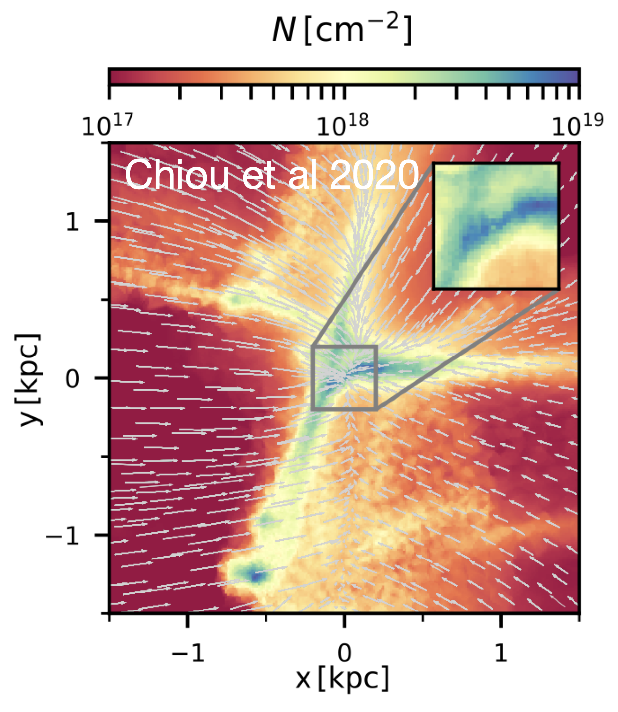
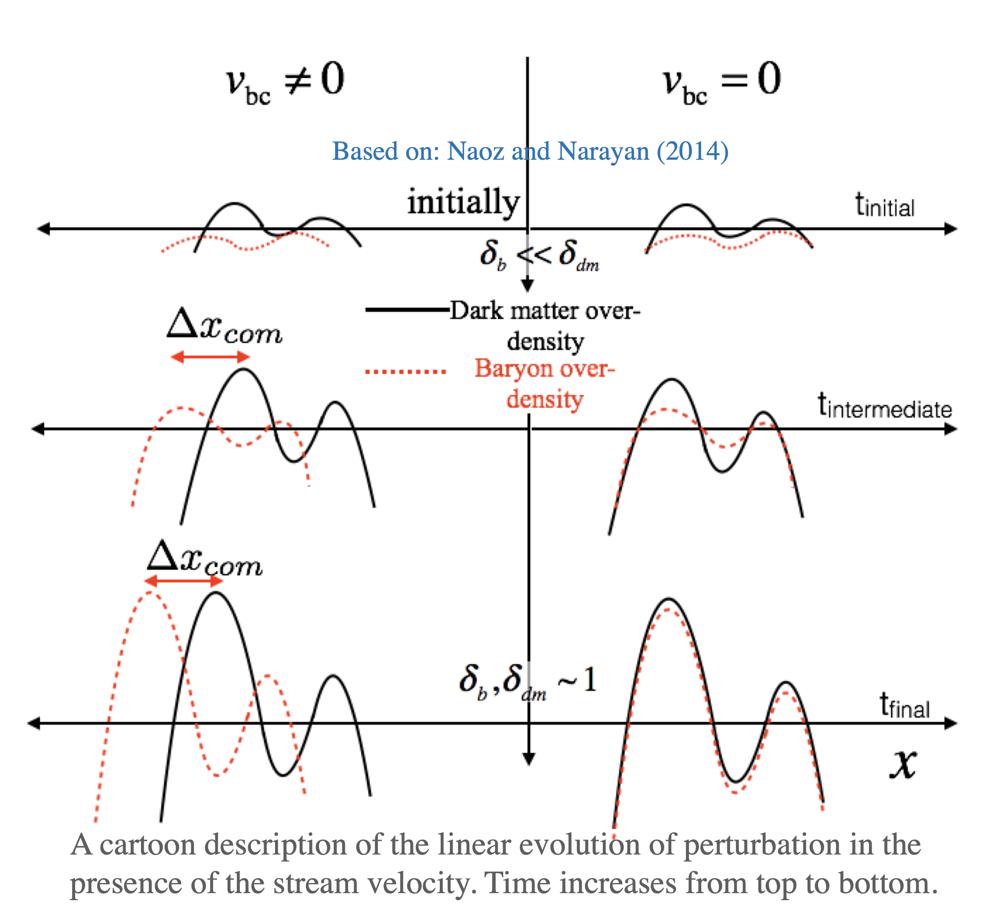
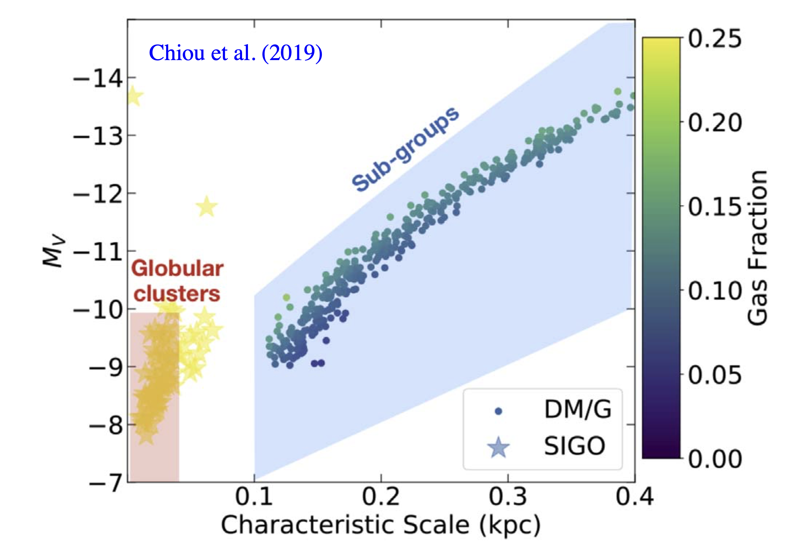

Research
Research Group Hot Jupiters EKL The First Galaxies SIGOs
The supersonic projects:
Supersonically-induced gas objects (SIGOs)

SIGOs with little to no dark matter (DM) component are predicted to exist in patches of the universe with non-negligible relative velocity between baryons and the DM at the time of recombination (see Naoz and Narayan (2014) ). Using AREPO hydrodynamic simulations we find that the gas densities inside of these objects are high enough to allow stars to form. SIGOs may be linked with present-day metal-poor local globular clusters. In the figure we see example for SIGO (projected) with its environment (adopted from Chiou et al 2020.)
Check out the Supersonic Project website here.
In the standard model of structure formation, due to the baryon-radiation coupling, baryon over-densities at the time of recombination (z ∼ 1020) were about 5 orders of magnitude smaller than dark matter over-densities. Recently, Tseliakhovich and Hirata (2010) showed that not only the amplitudes of the dark matter and baryonic density fluctuations were different at early times, but so were their velocities. After recombination, the baryons decoupled from the photons and their subsequent evolution was dominated by the gravitational poten- tial of the dark matter. In the period following recombination, the baryons underwent rapid cooling. At this point, their relative velocity with respect respect to dark matter, which at recombination was on the order of ∼ 30 km sec−1, became supersonic. Tseliakhovich and Hirata (2010) also showed that this relative velocity between the baryons and the dark matter remained coherent on scales of a few megaparsecs and in these regions it can be modeled as a stream velocity.
 The stream velocity introduces a phase shift between the baryons and the dark matter (see cartoon). This phase shift translates into a phys- ical separation between the dark matter and baryon over-densities. In Naoz and Narayan (2014) we used linear analysis to calculate the phase difference between the baryons and dark matter. In this work, using the framework of linear analysis, we showed that these baryons might have become non-linear and formed baryon-dominated bound objects that are physically separated from their parent dark matter halos. We coin these structures “supersonically-induced gas objects” (SIGOs). For an interesting range of masses, we found that the spatial offset is larger than the virial radius of the dark matter halo, allowing the baryonic clumps to survive as independent dark matter-free objects.
 Significantly, Chiou et al. (2019), using numerical simulations, combined with semi-analytical modeling, we showed that the present-day, local, absolute visual magnitude and the SIGOs characteristic scale is consistent with the observed globular cluster population, see Figure. This hints at a possible identification of the SIGOs as the progenitors of present day, low metalicity, globular clusters. In the Figure to the left, from Chiou et al. (2019), we speculated on how SIGOs and DM/G objects will be observed today. Assuming a burst-like star formation before reionization (z=10), we adopted an initial mass function (IMF) for the objects. In particular, we followed Decressin et al. (2007), and a Salpeter IMF for the DM/G. We calculated the fraction of spectral types of stars that evolve along the main sequence. The majority of the stars that survive to the present day will be G and K type stars, as well as red giants. Given this population, we subtracted their various bolometric corrections. We then roughly estimated each object’s visual bolometric magnitude. We also estimated that the observed stellar cluster that formed within the SIGOs corresponds to the highest density peak. We also over-plotted the region of the parameter space that is associated with GCs (red box) and Andromeda and the Milky Way sub-groups (blue area; McConnachie 2012). Heuristically, the SIGOs are consistent with the absolute visual magnitudes of present-day, local GCs. Although the SIGOS in this simulation only contain primordial gas, we speculated that some self-enrichment or second population-formation mechanism (such as pericenter passage of orbits about the nearest DM halo) may contribute to the nonzero metallicity in metal-poor GCs.